7 — It works on one box, and that's the whole problem
Scaling up should be a slider. If it's a rewrite, your state is in the wrong place.
Five assumptions hold perfectly on one box and break the moment a second instance shows up: module-level caches, where instance B simply disagrees with whatever instance A cached; in-memory sessions, where a user gets logged out on the refresh that happens to land on the other process; rate-limiter dictionaries, where the effective limit silently multiplies by however many instances are running; cron or timers living inside the web process, where a daily email now sends once per instance; and files written to local disk, which are simply gone the moment the next deploy replaces the box.

Same code, same deploy. The only change is the instance count — and now the cache disagrees with itself.
None of this throws an error. There's no crash, no stack trace — just nondeterminism the moment a load balancer has more than one place to send a request. These are topology bugs, not logic bugs, which is exactly why they survive code review: the code is correct for the topology it was implicitly written for, and nobody wrote down that the topology was an assumption. Rap Genius's 2013 "Heroku's Ugly Secret" incident is the canonical version of an invisible infrastructure assumption becoming catastrophic at scale: Heroku had silently switched to random routing, and at Rap Genius's traffic, 62% of request time was spent purely queueing — an app that needed 80 dynos under intelligent routing would have needed roughly 4,000 under random. Heroku's own GM publicly confirmed the failure. Nobody at Rap Genius wrote a bug; an assumption about how requests were routed simply stopped being true.
The fix isn't microservices — it's statelessness. The Twelve-Factor App's sixth factor says this almost verbatim: nothing in memory or on local disk should survive to the next request, and it calls sticky sessions "a violation... never to be used." AWS's own Well-Architected guidance says the same thing in its reliability pillar. It's worth naming the honest counterpoint here, because "just add statelessness" can sound like it contradicts the very real success of monoliths: DHH's majestic monolith and Shopify's modular monolith — 2.8 million lines of Ruby processing over $100M an hour as one deployable unit — are proof that "monolith" was never the problem. The lesson from vibe-coded apps isn't "split into services," it's "make the monolith stateless." Horizontal scale isn't something you bolt on later; it's something you avoid making impossible from the first commit.

Kill any web process mid-request and nothing is lost. The daily job runs once, no matter how many instances exist.
The target shape is a stateless, disposable web tier with state externalised: Redis for sessions, cache, and rate limits; object storage for anything written to disk; a real job system — Sidekiq, Celery, BullMQ — with a single scheduler, so background work runs once regardless of how many web instances are up. None of it is exotic. It just has to be decided, and vibe coding doesn't decide it — it writes correct code for whatever topology is implicit in the prompt, which is almost always one box.
If you've shipped fast with AI tools and want a second pair of eyes before it goes further, that's exactly what a vibe code audit is for.